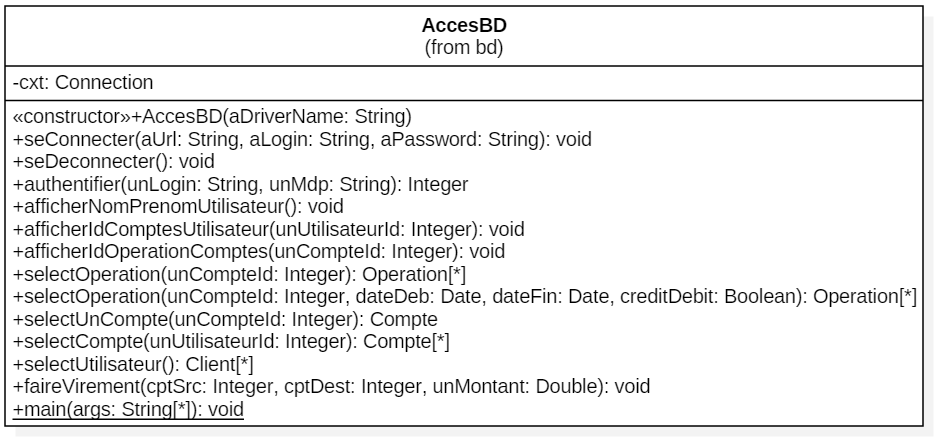
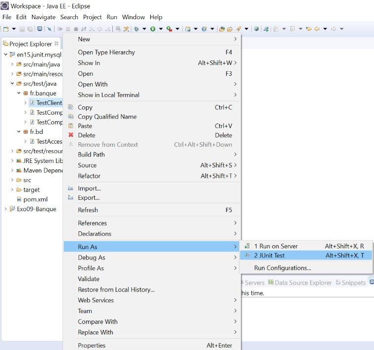
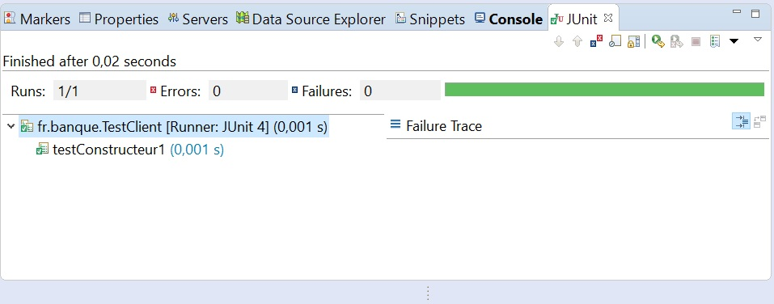

1 JUnit4
Importez le projet Java qui se trouve dans le répertoire de cet exercice.
Rappel : File/Import puis Existing Maven Project, indiquez le répertoire de cet exercice, puis importer le code.
Vous devez prendre le projet en relation avec votre base de données.
Nous avons ajouté toutes les dépendances au projet dans le fichier pom.xml (driver JDBC, librairies JUnit) et nous avons aussi ajouté le plugin Maven qui permet de lancer les tests unitaires automatiquement (plugin surefire).
Nous avons des entités dans le package fr.banque (Compte, Operation, Client), ils héritent tous de AbstractEntity.

Nous avons une classe utilitaire qui est dans fr.bd, elle permet de manipuler les entités (lecture/écriture) en se connectant à une base de données.
Lisez le code et réfléchissez à ce qu'il faut impérativement tester.
- Faut-il tester les classe entités ?, oui/non pourquoi ?, si oui qu'elle(s) méthode(s) tester et pourquoi ?
- Faut-il tester la classe fr.bd.AccesBD ?, oui/non pourquoi ?, si oui qu'elle(s) méthode(s) tester et pourquoi ?
Vous savez quoi tester, maintenant créez une nouvelle classe Java dans le répertoire de source Maven dédié aux test : src/test/java
Son nom devrait être TestNomDeLaClasseJavaConcerne, par exemple TestAccesBD ou TestClient.
Son package devrait être le même que la classe que vous souhaitez tester.
Dans cette classe, sur ses méthodes, vous pouvez faire usage des annotations suivantes :
- @Test : indique que la méthode fait partie des tests à exécuter.
- @Before : indique que la méthode est à exécuter avant chaque méthode annotée par @Test.
- @After : indique que la méthode est à exécuter après chaque méthode annotée par @Test.
- @BeforeClass : s'applique sur une méthode impérativement static, indique que la méthode est à exécuter une seule fois avant toutes les méthodes @Test.
- @AfterClass : s'applique sur une méthode impérativement static, indique que la méthode est à exécuter une seule fois après toutes les méthodes @Test.
Important : tous les éléments utilisés pour les tests (annotations, Assert, ...) doivent venir du package org.junit
Ajoutez des méthodes dans votre nouvelle classe, ses méthodes sont public, ne retournent rien, ne prennent pas de paramètres, ne lèvent pas d'exceptions. Leur nom n'a pas d'importance, cependant il est de coutume de les appeler testNomDeLaMethodeATester.
Exemple, si on voulait tester la classe fr.banque.Client et sa méthode ajouterCompte
package fr.banque; import org.junit.Assert; import org.junit.Test; import fr.banque.Client; import fr.banque.Compte; /** * Test sur la classe fr.banque.Client. */ public class TestClient { // D'autres méthodes à tester /** * Test sur la methode ajouterCompte de la classe Client. */ @Test public void testAjouterCompte() { Client unClient = new Client(); Compte unCompte = new Compte(Integer.valueOf(1), Double.valueOf(5000)); unClient.ajouterCompte(unCompte); Assert.assertTrue("Le client doit avoir un seul compte", unClient.getComptes().length == 1); } // D'autres méthodes à tester ? }
Notez qu'on ne fait pas de if ..., en test on utilise des Assert.assertQQChose. Vous avez une méthode assert pour tous les types de tests, consultez la documentation.
Dans Eclipse, faites un clic droit sur votre classe de test, puis Run As/JUnit Test.
Une nouvelle fenêtre vous présentera vos résultats de tests.
Lancer ses tests via Eclipse est une chose, mais il est préférable d'utiliser Maven. Cette technique est plus propre que le lancement dans Eclipse car c'est celle qu'utilisera Maven lors de la build.
Faites un clic droit sur votre fichier pom.xml, puis Run As - Maven test